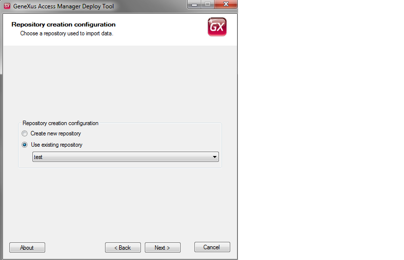
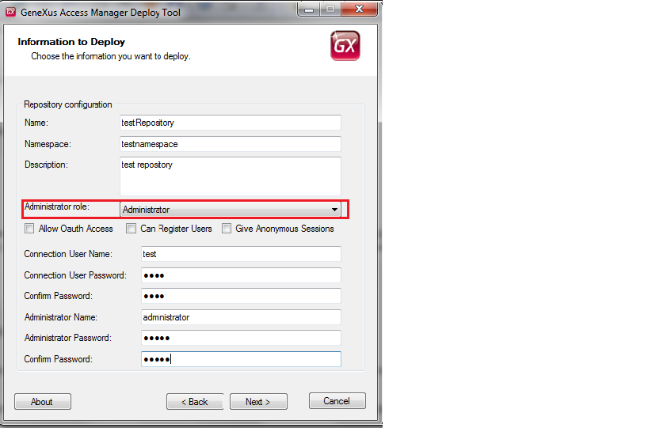
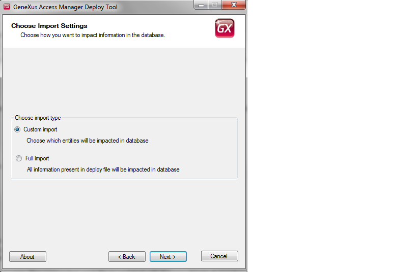
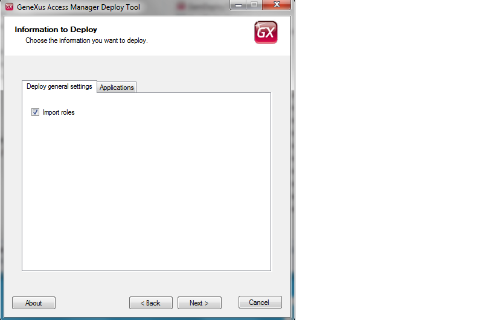
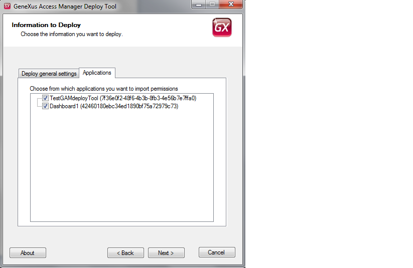

One of the purposes of GAM Deploy Tool is to allow administrators of GAM Manager Repository to export data from an existing GAM Repository and import data into another Repository, of the same GAM data store, or another one.
If the GAM database does not exist, the import process creates the database structure before importing the data.
The following sections explain the Import deploy process of GAM Deploy Tool.
1. Execute GAM Deploy Tool.
2. The first screen asks for the location of the package which is going to be imported (generated by the Export option of the tool).
3. Afterwards, you have to enter the DBMS connection settings.
There you need to enter the connection settings of the GAM data store where the package is going to be imported. The GAM database you specify can exist or not.
If it exists, you are asked to enter the credentials of GAM Manager Repository administrator. Afterwards you can create a new repository or update an existing one.

If it does not exist, a new GAM database structure will be created and its metadata initialized (GAM Manager Repository is created). Afterwards, a new repository is going to be created with the data in the package.
In sum, you can:
- Create a new repository (with new settings) or
- Update an existing repository
4. When a new repository is going to be created, you are asked to enter the settings of the repository which is going to be created:

You need to specify:
- Name of the Repository
- Repository Namespace
- Description
- Administrator Role: here specify the role of the package which is going to be associated to the administrator user which is going to be created. This role by definition needs to have the is_gam_administrator permission.
- Connection user name / Connection user password : specify a user which is going to be created as a new connection user.
- Administrator user name / Administrator user password : specify a user which is going to be created as an administrator user.
Note that a new adminstrator user is going to be created, as well as a new connection user. The connection.gam file is updated with the new GAM Repository Connection. The connection.gam file is generated in the folder where the GAM Deploy Tool is being executed.
5. The import can be full or custom (the latter option asks the user to specify further information later).

6. Nowadays you can select to import Roles, and Applications.


- If you are creating a new repository the settings of the repository which have been exported are not copied to the new repository. Otherwise, if the import is done in an existing repository, all the settings of the original repository (where the export was done) are copied to the repository where you are doing the import except for RepName, RepDsc, RepNamespace, RepUpg, RepVer, RepId, RepGUID columns.
- In case of selecting to import Roles, all the Roles in the package are imported in the database.
If a role being imported does not exist in the repository, it is created, taking into account the hierarchy of the roles in the original repository (where the export was done).
If a role being imported already exists in the repository, it is updated.
If you select Roles and not Applications, the Roles are imported without any relation to Permissions.
- If the role has permissions associated to it in the package, the only way to import the role and its permissions is to select the application where the permissions are defined. In this scenario, when imported, the permissions will be associated to the corresponding application and the roles will be imported with their relation to the permissions.
When you select to import Applications and Roles, all the permissions in those applications are imported, no matter if they belong to any of the roles in the package or not.
- If you select to import applications, the permissions of the selected applications are created in the repository if they do not exist, taking into account the hierarchy of the permissions in the original repository.
If the permissions already exist, they are updated in the repository.
- When exporting Roles (and Users also), the Security Policies related to them are also exported (the default Security Policy of Roles and Users). So, in case of importing Roles (Users), the Security Policies of the Roles (Users) are inserted if they do not exist in the database.
If they already exist they are updated only if you are doing a Full Import.
In case of Custom import where you can only import Roles and Applications, the Security Policies related to Roles (Users) are not updated if they already exist in GAM database.
- Permissions and roles are identified by a GUID, not by their name. If you import roles or permissions which exist in the repository with the same name, but different GUID, they will be considered as different entities. If you always perform the export from the same database, this will not happen surely. A scenario where this can happen is such that you create manually a role or permission in production database, and afterwards create it in development database. When doing the export from development, the role or permission will have a different GUID than the GUID it has in production database, so they are considered to be different although the have the same name.
Note: You can get the error "Repository, Application, Name already exists (BC: 1)(42)" if you try to update permissions that have the same name and different GUID, because the permissions name has a unique key defined. See How to Solve GAM deploy tool error: Repository, Application, Name already exists
- When importing data, registers of the database are never deleted. To take it as an example, if a role being imported is associated to fewer permissions than the role in the database where you are doing the import, the relation of the role to the permissions in the database is not deleted. The relation to new permissions is added.
Another example is that, if a role is son of a role X in the database where you are performing the import, and in the package the same role is son of role Y, after the import the role will have both parents, X and Y. The same happens to the permissions hierarchy.
- The GAM Repository Connections of the package are inserted in the repository where the import is done, but their name is changed. The new name is <original name> + Repository Id.
A possible scenario is that you migrate data from a GAM database version X to a GAM database version Y, where X > Y. The conversion of GAM database structure is done automatically by the GAM deploy tool. It executes the corresponding reorganization and copies the data. At present the data is only updated.
Import Users - GAM Deploy Tool
GAM Deploy Tool : Creating connection.gam file
|